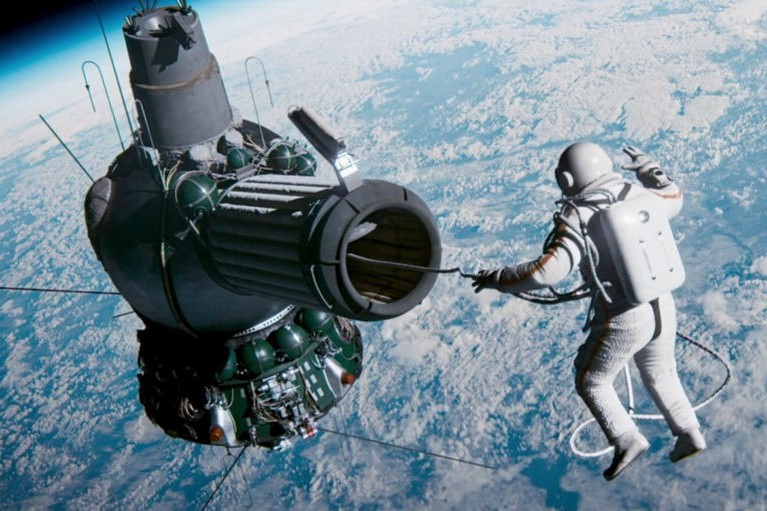
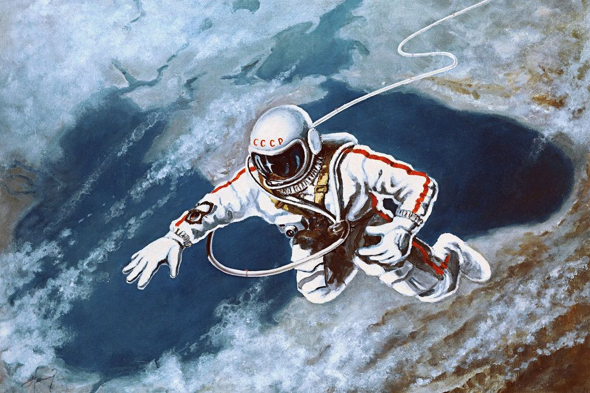

Alexey Arkhipovich Leonov (30 May 1934 – 11 October 2019) was a Soviet and Russian cosmonaut, Air Force major general, writer, and artist. On 18 March 1965, he became the first person to conduct a spacewalk, exiting the capsule during the Voskhod 2 mission for 12 minutes and 9 seconds.
On March 18, 1965, Leonov left Earth on his first flight into space with the Voskhod 2 mission. Leonov served as pilot for the 26-hour flight, commanded by Pavel Beyayev. Ninety minutes after launch, Leonov left the relative safety of his spacecraft, and became the first person to float freely in the vast, silent expanse of space.
It is initially successful and the country celebrates, but Alexey's suit over-inflates, rendering him clumsy and unable to enter the airlock. It was one of most difficult moments of his life – getting back into the capsule.
The film is set in the 60s of the 20th century. Russians plan to send a man into space. Military pilot Pavel Belyayev and Alexey Leonov are ready to step into the open space. But on the way they face many obstacles and dangers. Alexey Leonov himself became consultant of the picture.
Director: Dmitriy Kiselyov
Cast: Evgeny Mironov as Alexey Leonov, Konstantin Khabenskiy as Pavel Belyaev.
Leonov was an accomplished artist whose published books include albums of his artistic works and works he did in collaboration with his friend Andrei Sokolov.
Leonov took coloured pencils and paper into space, where he sketched the Earth.The pencils were adapted to deal with weightlessness. A rubber wristband was attached to the packet and individual threads to each of the pencils.
This painting is a self-portrait depicting Leonov during the first spacewalk during the Voskhod 2 mission.
Belyayev never flew into space again, but Leonov was part of the 1974 Apollo-Soyuz Test project where Russian and American spacecraft docked in orbit.